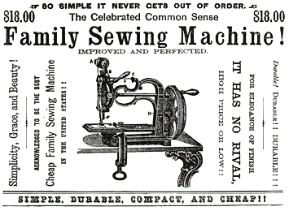

WELCOME TO MY WEBSITE

There are many, many ways to sculpt textiles, metals, and yarn to create clothes for work, for play, for special events, etc. Patternmaking is just one of them. In short, it consists of tracing separate panels (known as pattern pieces) onto paper and using that as a template to cut fabric.
Usually, this method requires the use of a portable or industrial sewing machine. The creation of the sewing machine was one of the many key factors in the Industrial Revolution in the 19th century.
It was the beginning of the clothing industry, the "emancipation" of stay at home wives who spent copious amounts of time hand-sewing and embroidering garments and their subsequent introduction into the manufacturing industry. It fueled colonial extraction of cotton and other textiles in colonized countries and was the origin of ready to wear, which forever changed the way Europeans (and as a consequence, all their colonized subjects) dressed and understood fashion.
Patternmaking thus took over as the most efficient, industrial-friendly way to standardize product.

As a designer, patternmaking is the main "language" which I use to translate design. With patternmaking, sculpting bodies becomes a question of meticulous measurement, geometry and sometimes just luck. My main interest in making clothes is in the potential to sculpt body shapes and play with "fashion" codes of industriousness, sex appeal, wealth/access, health, and gender.
In this series, I want to explore the silhouettes and construction methods conceptualised through different cultures throughout history. I want to focus on present-day renditions of historical silhouettes, particularly as they enter the global fashion market, and I also want to look at ideas of dress for the future.

Some guiding questions for this project: What does patternmaking for the future look like? After the end of fast fashion, what will our clothes look like? What cultural influences, either via assimilation or colonial subjugation, can we find in these forms? What ideals in terms of gender, religion, class, etc. do these silhouettes espouse? What societal function did the wearers of these garments play? How are art and craftsmanship embedded into these pieces? In what context were these pieces made, bought, sold, and passed down from one person to another?
You can leave compliments on my instagram @kotamiofficial :)